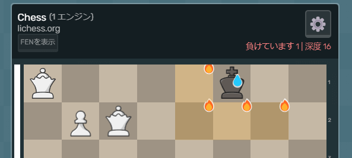
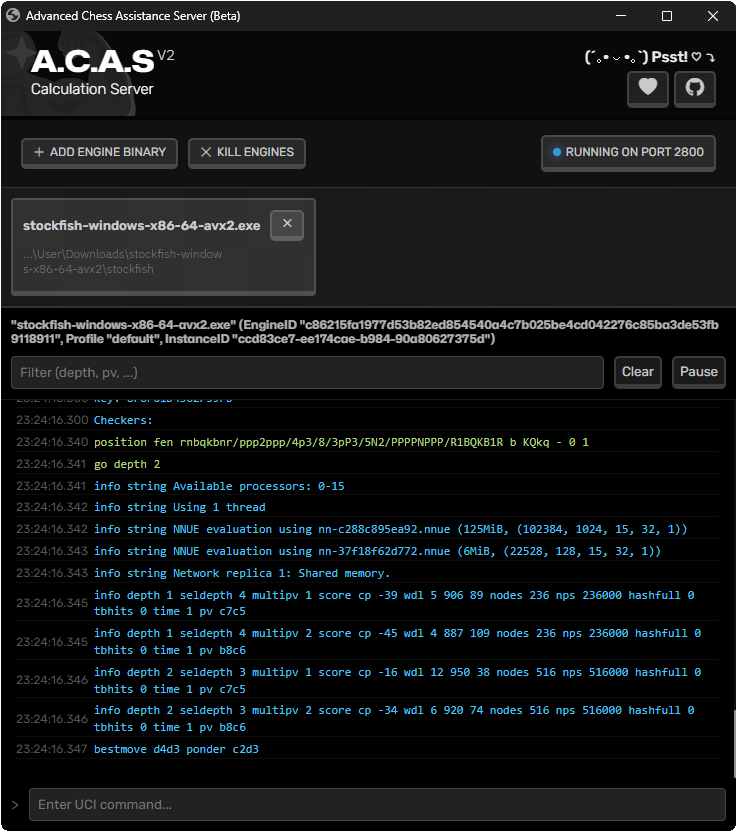
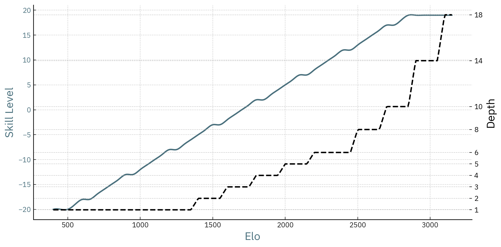
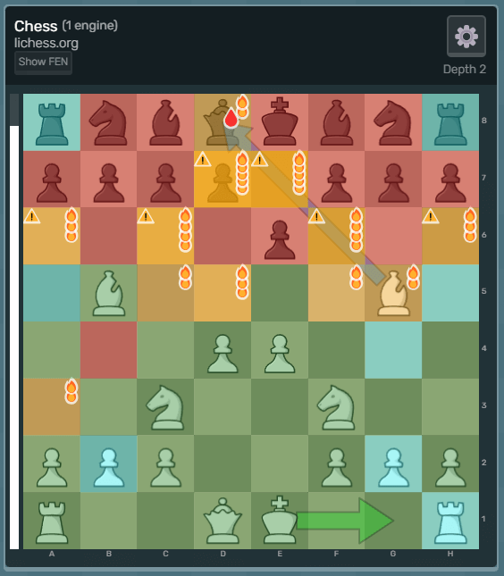

Usage Guide
This guide explains how to use A.C.A.S and what every setting does, so you can pick the best config for your device and playstyle. Install the userscript, then keep the GUI open while you play on a chess site. Suggested moves show up on the board you're playing on.
Press Ctrl+D (Cmd+D on Mac) to bookmark this page.
Nothing matches that. Try a shorter word, or check the help page.
♟️ Supported Chess Sites
- Battletested (Should work flawlessly)
- Stable (Works fine, but might have some minor bugs)
- Uncertain (Might work fine, be buggy, or not work at all)
⚠️ This list might be outdated. Click see all supported sites in the GUI for the current one.
🌐 Languages

Change the language with the flag dropdown at the top right of the GUI.
♟️ Board Controls
Use the plus and minus buttons on the GUI to resize its boards. Show FEN shows the current position as text and Show PGN shows the recorded moves. The PGN only contains positions A.C.A.S saw, so keep it connected from the start if you want the whole game.
🔥 Running External Engines (Beta)
External engines can be less stable and a bit slower than the built-in WASM engines, depending on your hardware and the engine.
This feature is in beta, so expect bugs and please report them. Not every engine has been tested. The server is currently built for Windows only. It uses Electron, so other systems might come later.

Getting started with the server
- (Or compile it yourself, then open it)
Click "Add Engine Binary" to add your chess engine.
(On Windows, look for a .exe)Enable External Chess Engine in the GUI.
(Otherwise A.C.A.S uses a built-in engine)Your engines appear as a list in the GUI. Click the one you want.
(Add engines in step 2 first)
If the server is running but the GUI won't connect, check Server Port in Engine Settings. It must match the port shown in the Calculation Server. The GUI starts with 2800. The icon beside the server's port shows its status: spinning dots mean it is waiting for the web GUI to connect, a checkmark in a circle means the web GUI is connected, and a warning triangle means an unauthorized connection was blocked. Hover over the port for details, or click it to change the port.
Connection status circle
- 🔴 The server could not start or crashed.
- 🟢 The server is up but not connected.
- 🔵 Connected to the GUI.
Risks of hosting a server
External engines work through a WebSocket server on localhost. Running a server is never risk free, and this one might have vulnerabilities despite our best efforts. Never expose it to the public internet.
Any website you visit might also try to connect to the server. The server cuts off connections from unknown domains and alerts you. Most modern browsers limit requests to localhost, so only allow it for the A.C.A.S GUI.
Having issues with the external server?
Keep the Calculation Server on the same computer as the GUI. If your browser asks to connect to apps on your device or local network, allow it for the GUI. Permission names vary by browser and version.
- Google Chrome / Edge
- Click the icon beside the address, then Site settings.
- Allow access to apps on this device or the local network if listed, then reload the GUI.
- Mozilla Firefox
- Open Firefox Settings and find Permissions.
- Check Device apps and services and Local network devices if listed. Allow the GUI's site, then reload it.
⚙️ Settings
You don't need to change everything, the defaults are fine to start with. Setting names below link straight to that setting in the GUI, even if it's inside a panel.
- Board Controls, Settings Backups and Activity Log
- Profiles and Dynamic Settings
- Floating Panel, Chess Engine and Fusion
- Move Suggestions, Move Timing and Opening Book
- Learning Mode, Feedback and Move Detail
- Turn Settings, Moves On Demand and Render Settings
- Spoken Moves, Messages and Ghost Script
- Appearance and Concealment and Restart Triggers
⚙️ Import, Export and Reset
The buttons above the settings let you save your setup or start over.
- 💾 Export Settings saves a
config.jsonwith your global settings and profiles. Per-board settings, opening books and custom background images are not included. - 📂 Import Settings loads a saved config and reloads the GUI. It replaces your current config instead of merging, so export a backup first.
- 🗑️ Reset Settings restores defaults after confirmation. It also removes added profiles, imported opening books and your custom background.
Keep your config private if it contains a Discord webhook. Import opening books and background images separately on other devices.
⚙️ Activity Log
Click 📜 above the settings to open the Activity Log. Logging is off by default, so turn it on with its power button before reproducing an issue. It records engine messages, setting changes, warnings and errors.
Use the filters and search to find entries, then the copy button to copy the visible results when reporting a bug. The latest 2000 entries are kept in this browser. Check them for private information before sharing.
⚙️ Profiles
A profile is a separate set of engine settings. Click the + next to the profile tabs to add one. For example, you can keep a Stockfish profile and a Maia profile to compare their suggestions.
Selecting a profile only changes which settings you're editing. Every enabled profile keeps running! Turn off Enabled in profiles you don't need, especially on a slow device.
Global settings apply to all your boards. When instance selection is available, you can change settings for a single board instead. An instance is a board A.C.A.S has connected to. Some settings, like the Floating Panel, are shared by all profiles.
⚙️ Floating Panel
The Floating Panel is a small Picture-in-Picture window that stays on top of other windows and shows key info about the current match. You can resize it smaller.
Keep it open. It stops the browser from putting A.C.A.S to sleep when you're on another tab. If suggestions freeze when you switch tabs, this is why.
With the panel disabled, A.C.A.S plays a silent audio loop instead to stay active. This may help in some browsers like Chrome but isn't guaranteed. You also need to interact with the GUI each time you open it so the browser allows audio.
Without the panel, you can also keep two browser windows side by side so A.C.A.S stays at least partly visible.
The panel header shows the chess site's domain with a latency in ms on its left. This is the connection delay between the userscript on the chess site and the GUI, measured from a keep-alive message the userscript stamps. It's not a network ping to a server.
The ms next to Depth in each profile is the calculation time of that profile's engine. It counts from the start of the calculation to the latest engine update, or the final move.
The two values are measured separately. Roughly, the time from a board change to the move appearing on the site is the connection delay, plus the calculation time, plus the connection delay again on the way back, plus any move display delay you set. The return delay is assumed to match the first one.
Click the settings button next to Floating Panel to find these:
- Display Board shows the board instead of just text, including in Learning Mode.
- Share Board combines move overlays from several profiles on one board. Enable Display Board and Share Board for every profile you want to combine. They must show the same position and orientation. Animated Learning Mode boards stay separate. Each profile keeps its own status, evaluation and feedback.
- Display Evaluation shows the evaluation bar and score in every panel mode, independent of Display Board.
- PiP Quality changes the picture resolution, not the engine's strength. Lower it if the panel is slow or your tablet gets warm. The default is 70%.
- SAN Move Notation shows moves like Nf3 instead of g1f3. It also applies to Move TTS.
⚙️ Chess Engine
The Chess Engine setting picks the engine that calculates moves. Stockfish 18 Lite Single is the default. Choose a full Stockfish version for stronger analysis. The Lite versions are smaller downloads, which helps on phones and tablets. For chess variants, use Fairy Stockfish 14.
- Stockfish, including Stockfish 19 (Strong engine analysis)
- Fairy Stockfish 14 (Chess variants)
- Maia 3 and Maia 2 (Suggestions based on human play at different ratings)
- Fusion (Stockfish 18 Lite Single analysis blended with Maia 3 human moves and a selectable personality)
- Lc0 with Maia (Semi-realistic human-like play)
- Lozza 9 (Fairly strong engine-like play)
- External engine (An engine you run through the Calculation Server)
A.C.A.S uses the engine's output to give you insights into the match. Some engines output less extra information, so fewer insights are possible. Stockfish gives the best results.
No engine will play like a human for you. Don't expect to play 2500 ELO matches as a 1000 ELO player. If you get banned for breaking our ToS, that's on you.
⚙️ Chess Variant
Most users don't play variants, so you most likely don't need to change this or Chess 960. A.C.A.S should detect the variant automatically if it's supported.
The Chess Variant setting changes the type of chess Fairy Stockfish plays. Other engines mostly don't support it, but most support Chess 960, where the starting positions of the pieces are randomized. To play variants, use the Fairy Stockfish Chess Engine.
⚙️ Engine Elo
The Engine Elo setting controls how strong the engine plays, from 600 to 3200 ELO. Treat it as a rough strength setting, not a promise that the engine plays exactly like someone with that rating. Stockfish at low ELO can behave oddly, and Maia is better for suggestions based on lower-rated human play.
Standalone Maia 3 uses 600 to 2600 Elo in A.C.A.S and Maia 2 uses 1100 to 2000. The shared inputs allow 600 to 3200. If your saved rating is outside a Maia engine's range, A.C.A.S warns you and limits the applied value without changing your saved choice. Fusion accepts 600 to 3200, but values above 2600 are uncalibrated guesses. For Stockfish-style engines, 3200 removes the usual strength and depth limits. Max Movetime can still stop the search.

⚙️ Opponent Elo
The Opponent Elo setting tells Maia and Fusion what rating to assume for the other player. It doesn't change the real opponent or read their rating. If you're unsure, keep it the same as Engine Elo.
It allows 600 to 3200, with the same Maia limits and warnings as above. With Advanced Elo enabled, the regular Engine Elo and Opponent Elo fields are disabled and blurred. Use the engine's advanced rating options instead.
⚙️ Advanced Elo
The chart above shows how A.C.A.S adjusts depth and skill level for the basic Engine Elo setting. It doesn't apply to Maia's rating inputs. To set the limits yourself, click the settings button next to Engine Elo and enable Advanced Elo. Just opening the panel doesn't enable it.
- Depth controls how far the engine searches. Larger numbers generally take longer. It isn't a number of full turns and the engine doesn't look at every line equally.
- Search Nodes limits how much search work the engine does. In the default search mode, a positive node limit replaces the depth limit; 0 means use depth instead.
- Search mode defaults to depth/nodes. Engine movetime instead sends
go movetimewith the separate Engine movetime budget, and Infinite sendsgo infinite. Neither adds depth or node limits; those controls are disabled in these modes. Use these modes only with engines that support them.
For engine-managed timing through the Calculation Server, select the external engine, enable Advanced Elo, choose Engine movetime, and set its budget in milliseconds. Max Movetime is disabled and ignored in this mode so it cannot interrupt that budget; its saved value is preserved for other modes. A board change still stops the search. Infinite mode streams analysis until stopped; with Only Top Moves enabled, a nonzero Max Movetime waits for the final result.
For standard chess, A.C.A.S sends the recorded position and moves when they can be legally replayed. History starts when observation begins, so earlier moves are unavailable if you join mid-game. Missing or inconsistent history, Chess960, variants, and hypothetical turn changes use the current FEN instead. The Calculation Server must also be updated to accept longer position commands. Its 262,144-character limit accommodates tens of thousands of moves; if exceeded, only the most recent moves that fit are sent.
Other options come from your engine and appear once it starts. Open a chess board if the list is empty. Advanced Elo overrides the basic Elo controls, so disable it to go back to the normal Engine Elo setting.
Some built-in engines accept text files through a textarea: PersonalityFile for Rodent V, VariantPath for Fairy-Stockfish, and ConfigFile for modern Lc0. Paste the file's contents, not its path. A.C.A.S supplies them in memory and restarts that profile when they change. Empty text removes the custom file. The 64 KiB limit applies to each file, and settings exports include the contents.
Keep each engine's own format. Rodent uses one setoption name ... value ... per line. Fairy uses INI variant definitions, such as [mychess:chess] followed by doubleStep = false on the next line. Its variant dropdown updates after loading. Lc0 uses long options such as --cpuct=3.25. Invalid contents show an error instead of silently using defaults. Binary networks, opening books, tablebase directories and log outputs are not text-file inputs. External engines keep their normal path-based settings.
Not every Advanced Elo option does something. For example, "Ponder" most likely does nothing because A.C.A.S doesn't implement it. Built-in engines are also limited by your browser, so extra cores, memory or files may go unused. This is meant for advanced users.
Feel free to experiment. These settings are very dynamic and not every combination can be tested, so bugs are possible. Please report them on GitHub.
⚙️ Fusion Engine
Fusion blends Maia 3 move predictions with Stockfish 18 Lite Single analysis. Maia suggests what a human of that rating would play and Stockfish makes sure the move isn't too costly. A personality then nudges the choice toward a style without changing Stockfish's evaluations.
Select Fusion under Chess Engine. For more controls, enable Advanced Elo and open a chess board. Only standard chess is supported.
If no combined suggestion passes the filters, Fusion falls back to Maia with your personality and Personal Variation. That skips Stockfish's quality penalties and Tactical Safety, so the move can be weaker. Fusion never falls back to Stockfish-only suggestions.
A suggestion always needs a valid Maia prediction for a legal move. If Maia fails to load, times out or is stopped before it responds, you may get no suggestion. Maia Wait caps how long Fusion waits for Maia after Stockfish finishes, within the search's time limit.
Main settings
- Stockfish Weight: Higher values favor moves Stockfish rates better. At 0, only Maia and the personality guide the choice.
- Human Plausibility: Higher values exclude more moves Maia finds unlikely.
- Maia Temperature: Lower values favor Maia's top picks. Higher values spread the choice more evenly.
- Personality and Personality Strength: The style and how strongly its bonuses apply. See below.
- Personal Variation: Adds a consistent set of small preferences based on a saved identity. Random Seed overrides that identity.
- Randomness and Top P: Allow alternative choices and limit the pool they come from. Randomness 0 keeps the ranking deterministic.
- Tactical Safety and Max Centipawn Loss: Filter combined suggestions by evaluation loss. They don't protect Maia fallback moves.
- Candidate Moves and MultiPV: How many alternatives Stockfish examines and how many suggestions Fusion returns.
Personalities
A personality adds small bonuses or penalties to moves with certain traits, like giving check, capturing or castling. It also scales two other settings. Temperature multiplies Maia Temperature, so higher means more varied choices. Tolerance multiplies Max Centipawn Loss, so lower means Fusion accepts fewer worse moves. Personality Strength scales the bonuses from 0% (none) to 200% (double).
These are handcrafted rules, not trained models or real player profiles. A style can shift the odds but can't replace Maia's policy or make a bad move good.
- Balanced: No style bonuses. The neutral default.
- Human: No style bonuses, but more varied choices and a looser loss limit, so it makes human-like slips more often.
- Solid: Favors king safety, pawn cover, saving attacked pieces and castling. Strict loss limit.
- Aggressive: Favors checks, captures, advancing pieces and pawn storms toward the enemy king.
- Positional: Favors developing pieces and central squares. Avoids bringing the queen out early.
- Tactical: Favors checks, captures and saving attacked pieces. Sticks closely to Maia's top picks with a strict loss limit.
- Bunker Goblin: Heavily favors king safety, pawn cover and castling. Avoids pawn storms and early queen moves.
- Porcupine Accountant: Strongly favors saving attacked pieces and trading material. Plays safely and avoids giving check. Strict loss limit.
- Paranoid Turtle: Extreme king safety, retreating and saving attacked pieces. Dislikes advancing and giving check.
- Caffeinated Squirrel: Chaotic. Loves checks, development, advancing and pawn storms, and avoids trades. Very varied choices with a loose loss limit.
- Queen Retirement Club: Favors trading pieces, especially queens. Avoids early queen moves.
Ratings and depth
In Advanced Elo, UCI_Elo and Enemy_Elo set the ratings Maia assumes, from 600 to 3200. Values above 2600 are uncalibrated. Depth and Search Nodes control Stockfish, not Maia, so a high Elo can't make up for a shallow search.
Learning Mode turns off random sampling and uses Stockfish's evaluation for grading, while keeping the Maia and personality preferences.
Fusion doesn't guarantee a particular playing strength or human-like play. Follow the chess site's rules and our Terms of Service.
Rodent V
Rodent V runs locally in your browser and supports chess, Chess960 and multiple move suggestions. Its personalities change how it evaluates positions, using handcrafted preferences, neural networks or a mix of both.
To try one, select Rodent V, open a board, then enable Advanced Elo from the cog beside Engine ELO. The Personality dropdown has ampere, chaotic, hector, nimzoid, rodent, tal_hybrid and tal_nnue, plus the latest engine default. The port loads the matching network architecture automatically.
Have your own personality text? Paste it into PersonalityFile. It overrides the base preset, while saved individual controls override the pasted text. Network and book references inside it must use the bundled resources. Clear the textarea to return to the preset and your individual controls.
You can also tune hceWeight, nnueWeight, OwnSafety, OppSafety, mobility and other UCI settings there. Saved style edits override the selected base personality, including after reload. Use a fresh profile for an untouched preset. Unedited fields show engine defaults, not the preset's live values. Enable OwnBook if you want the preset's opening books too.
Style and strength are separate. Normal Engine ELO uses Rodent's 800-3000 limiter, with 3200 meaning full strength. In Advanced Elo, turn on UCI_LimitStrength and choose UCI_Elo. Search Nodes overrides its rating-based node budget. These ratings are approximate, not a guarantee of human playing strength. See the Rodent port notes for controls, downloads and limitations.
⚙️ Weights
The Lc0 Weights setting decides how the Lc0 engine plays. Maia weights are marked with the ELO they roughly play at. The strength and style of the other weights is unknown, but most are quite weak.
The Maia weights for Lc0 are meant for a single-node search. It's fine that the engine barely looks ahead. Raising Search Nodes changes how suggestions are chosen. These weights are separate from the built-in Maia 2 and Maia 3 engines.
⚙️ Move Suggestions and Only Top Moves
Move Suggestions sets how many candidate moves the engine tries to give. For example, 3 asks for up to three different moves, not the next three moves of one line. Some engines may give fewer, and more suggestions mean more work for the engine.
Only Top Moves mainly changes when suggestions appear. When enabled, A.C.A.S waits until the search finishes instead of showing suggestions that keep changing. It doesn't reduce Move Suggestions to 1. Searches without a normal stopping limit can still show updates while thinking.
For a single arrow, set Move Suggestions to 1. Setting it to 0 hides the suggestions but doesn't turn off the engine.
⚙️ Move Delay and Max Movetime
These sound similar but do different things. Both use milliseconds, so 1000ms is 1 second.
- Move Delay holds back suggestions until at least this much time has passed since the calculation started. It doesn't give the engine more thinking time. If the search takes longer, you still wait for it.
- Max Movetime stops the search after roughly this much time. The engine can finish earlier if it reaches its depth or node limit. 0 means no extra time limit, not instant results.
For example, with Max Movetime at 1000 and Move Delay at 3000, the engine can stop after about a second, but suggestions only appear after about three.
Max Movetime can also follow the opponent's latest thinking time. See Opponent Move Time under Dynamic Settings.
⚙️ Opening Book
Opening Book loads saved moves from a file. Click the filename box to choose a Polyglot .bin or move-annotated .epd book. Book moves are shown separately from engine suggestions, with white arrows by default. The engine keeps calculating normally.
A book only has moves for positions stored in it, so nothing may show up. Move Suggestions also limits how many book moves are shown. Change their color and opacity in Accessibility Settings, or click the × next to the filename to remove the book from that profile.
Not every .epd file is an opening book. It needs move annotations like bm, pm or pv. A list of starting positions alone doesn't tell A.C.A.S which moves to show. Books are stored in this browser, so import them again on other devices.
⚙️ Learning Mode
Learning Mode reviews a move after you've played it instead of telling you what to play. The GUI shows the position before your last move, the profile's engine suggestions and a rating of the move you played. The board being one move behind is intentional!
It uses the engine selected in that profile with its Elo and search settings, so a Maia review can differ from a Stockfish review. Ordinary Move Ratings use a separate Fairy Stockfish engine instead. Keep A.C.A.S connected while playing, because it needs the recorded positions.
Learning Mode may not work well with Maia 2 or 3. Their ratings are approximate outcome estimates, not deep tactical analysis. Use Stockfish for more reliable reviews.
Live move arrows and opening book hints from a learning profile aren't sent to the chess site's board. Move TTS reads the move's rating instead of the next suggestion. Learning profiles also ignore Moves On Demand, Only Own Turn and Always My Turn so both sides of the position get recorded.
⚙️ Display Board and Evaluation
The Display Board checkbox in Floating Panel settings controls the board in both normal and Learning Mode. Turn it off for a compact learning panel with the opening, rating counts and move feedback. Display Evaluation separately controls the evaluation bar and score in every mode. The GUI's main board and move review work as usual.
Hiding the board pauses the panel's animation and disables the animation controls without clearing your saved choices. Showing it again resumes the animation when a review is available. It doesn't close the panel or affect its keep-alive purpose.
⚙️ Animate Best Line
Animate Best Line replays the engine's preferred continuation in the Floating Panel when it found a different move from yours. A line is a sequence of moves and replies. Display Board must be enabled to see it.
Stop After Enemy Move ends the replay when the opponent plays their real reply. Disable it to keep watching the review until your next move.
Learning Mode belongs to a profile and doesn't disable other profiles that still give live suggestions. If you only want reviews, turn those off.
⚙️ Move Ratings and Feedback
Move Ratings compare your played move with the best move found by a separate Fairy Stockfish engine. Opponent Ratings do the same for the other player. These review moves already played and don't predict the next one.
Search Depth in Feedback Settings controls this separate engine, not your main one. Higher depth gives a better look at the position but takes longer and uses more processing power. In Learning Mode, the selected profile's engine does the review instead.
Ratings consider how much worse the played move is than the engine's best, including evaluation changes and forced mates. They don't use the chess site's own rating system, so labels won't match exactly. Shallow analysis can also miss things.
- Feedback On External Site puts the rating on the chess site's board. It's separate from Moves On External Site and Render On External Site.
- Feedback Emojis controls the rating emojis beside moves. 🤖 is the engine's best move, 🏆 is a move that evaluates better than the engine's pick, 💎 is excellent, 👍 is good, ⚪ is neutral or forced, 😬 is weak, ❔ is an inaccuracy, ❓ is a mistake, ⭕ is a blunder, 💀 is catastrophic and 📖 is a book move. Turning them off doesn't stop the review.
- Feedback In Floating Panel shows a compact version of the feedback in the panel.
- Move Counts In Floating Panel adds totals for each move rating outside Learning Mode. Enable the ratings you want counted and Feedback In Floating Panel too.
- Estimated Elo & Accuracy shows an approximate rating and an accuracy percentage, written like Elo 1500 (87%). It has its own checkbox next to Learning Mode in the feedback display options and works on its own. Move Ratings, Opponent Ratings and Learning Mode can all stay off. The moves are then still reviewed quietly, but no rating or emoji is shown for them.
- Outside Learning Mode you get one estimate for you and one for your opponent. Both are tracked even if only one side has ratings enabled. In the main window they sit on the same line as that side's move counts, or alone if there are no counts. In the floating panel they share one extra line below the counts, with your opponent on the left and you on the right. In Learning Mode there is a single estimate for the moves you reviewed.
- For Elo, Maia 3 looks at the moves actually played and checks how likely those choices would be at ratings from 600 to 2600. It combines those clues into one estimate, with a gentle pull toward 1500 while the evidence is thin. This needs at least 6 eligible moves per side after the first 4 full moves, plus a little time for the background analysis. It works independently of the engine you play with and doesn't read your configured Elo or the opponent's advertised rating.
- While Maia is still gathering enough results, a simpler estimate uses the average winning chance lost compared to the review engine's best move. That fallback starts after 2 eligible reviewed moves and skips opening book moves and forced moves. Accuracy uses those same losses even when Elo comes from Maia, so the two numbers don't have to tell exactly the same story.
- Outside Learning Mode, the move review and accuracy come from a separate Fairy Stockfish engine. In Learning Mode, your profile's engine does that review instead. Maia's Elo estimate uses recorded moves from standard chess games without Chess960. Other variants use the loss-based fallback. If you connect partway through a game, earlier recorded moves are reviewed in the background when possible.
- Think of the Elo as a little clue about the moves in this game, not a new official rating. One game can be noisy, and bots don't always play like humans at their advertised rating. Winning doesn't guarantee a higher estimate either. You can play well for most of a game and still lose to one big mistake. The move feedback is usually the better place to find something useful to practice.
Engine critiques compare your move to the engine's idea of best. They aren't a judgement of you as a player. Use them to find things worth reviewing, not to worry about every small inaccuracy.
⚙️ Move Detail and Filter Shown Pieces
Move Detail lets you ask for less help. A.C.A.S can hide part of the move so you figure it out yourself.
- Full move shows where the piece starts and where it goes.
- Piece only shows which piece to consider, but not where to move it.
- Destination only shows the target square, but not which piece goes there.
- Captures only or Non-captures only hides suggestions of the other kind. You can combine these with piece-only or destination-only hints.
Filter Shown Pieces hides suggestions for certain piece types. It has separate lists for your pieces and opponent pieces. For example, you can hide queen moves and keep knight suggestions.
Move Detail applies to your move hints. Opponent move guesses have their own piece filters and can still show a full reply, so turn those off too if you don't want that information.
These settings filter suggestions the engine already found. They don't make it find another move with an allowed piece, so if everything is filtered out you may see no hint. Moves On Demand uses full move detail outside Learning Mode.
⚙️ Moves On Demand
Moves On Demand waits until you click or tap a piece on the chess site's board, then asks the engine for moves with that piece instead of suggesting moves for the whole board.
It's useful when you want to choose the piece yourself. Refresh the chess site after changing it if it doesn't respond. Ghost Script disables the board overlay this feature needs, so they don't work together.
⚙️ Only Own Turn, Always My Turn and Reverse Side
These change which side the main engine calculates for. They're easy to mix up.
- Only Own Turn skips suggestion searches while it's the opponent's turn. It doesn't turn off separate feedback analysis.
- Always My Turn makes the engine treat the board as if you could move next, even while the opponent is thinking. Those suggestions are hypothetical because their real reply can change everything. Disable it to analyze the side whose turn it really is.
- Reverse Side switches the profile's side to the opponent. With Always My Turn, you can look for their best moves instead of yours. It doesn't just rotate the board.
⚙️ Dynamic Settings
Dynamic Settings lets a setting change as the game goes on. Click the small curve button beside a supported setting to open its graph. It's optional, so use the normal setting if you want one value for the whole game.
The horizontal axis (X) is what you're watching and the vertical axis (Y) is the setting's value.
- Piece Count counts all pieces and pawns from both sides, including kings. Ordinary chess starts at 32.
- Move Number is the full move number. It goes up by one after both White and Black have played.
- Evaluation is your advantage from the latest completed primary engine evaluation. Negative means you're losing, positive means you're winning and 0 is equal. It's in centipawns, so +100 means roughly a one pawn advantage, not necessarily an extra pawn on the board.
- Opponent Move Time (ms) is how long the opponent's latest fully observed turn took. Use it to adapt a setting to their pace.
- Material Balance (cp) is your remaining material minus theirs, using fixed piece values. It updates from the board without waiting for the engine.
Choose a variable and a setting, then click ＋ Line for the profile you're editing. Drag the points, or select one and type its X and Y values. Click ＋ Point to add more. Changes save as you edit.
For example, choose Move Number and Engine Elo. Put one point at X 1, Y 1200 and another at X 40, Y 1800. With a Linear curve, the Elo gradually rises from 1200 to 1800 over those moves. After move 40 it goes back to your saved Elo unless you extend the line.
- Step holds a value until the next point.
- Linear changes evenly between points.
- Smooth follows a curved transition between points.
Checkboxes and dropdowns always use Step because they need a definite choice. For dropdowns, Saved default means use the value from the normal setting. Each setting has one curve per profile, so you can't use separate Piece Count and Move Number curves on it at once.
A graph still follows the setting's normal rules. For example, an Engine Elo curve won't apply while Advanced Elo is enabled. If you graph Chess Engine itself, it goes back to your saved engine at the start of a new game.
The normal input keeps showing your saved value even while a graph overrides it. Check the curve button's live value if the engine seems to use something else. Outside the line's range, or before its variable is available, the saved value is used. Remove the line to go back to a fixed setting.
⚙️ Opponent Move Time (ms)
This is the time between the userscript seeing your move and seeing the opponent's reply. It is not the chess site's clock time. Network delays, board animations and late move detection can affect it. It uses the real player's side, not a profile's Reverse Side setting.
To make Max Movetime match the latest sample, open its curve editor, choose Opponent Move Time, add a line for your profile and select Linear. Set the endpoints to X 1, Y 1 and X 100000, Y 100000. For example, a reply that took 2400ms sets Max Movetime to 2400ms. This changes the search budget, not when an automatic move is played, and depth or node limits can still end the search earlier.
The value updates after a complete observed opponent turn, not continuously while they think, and stays at the latest valid sample between replies. Loading mid-turn gives no complete sample. Reconstructed missed moves aren't timing samples, and a new game clears the value. Until a sample exists, or if it's outside your curve's range, the saved setting is used. The example covers 1ms to 100 seconds and doesn't bypass Max Movetime's normal limits.
⚙️ Material Balance vs. Evaluation
Both use centipawns (cp), where 100 cp is one pawn, but they answer different questions.
- Material Balance: how much material you have compared with the opponent. It adds pawn 100, knight 320, bishop 330, rook 500 and queen 900, then subtracts their total from yours. Kings count as 0. Positive means extra material, negative means less and 0 means equal.
- Evaluation / Your Advantage: how good the engine thinks your position is. It looks at threats, king safety, piece activity and material, not just a piece count. It depends on the engine and the analysis available.
For example, after sacrificing a rook for a winning attack, your Material Balance could be -500 cp while Evaluation is +800 cp. You're down material but the engine thinks you're winning, so Material Balance isn't another win/loss estimate.
Use Evaluation to follow the engine's overall assessment. Use Material Balance for predictable rules that don't depend on an engine, like giving more hints when you're down a piece. Unlike Piece Count, it tells losing a queen from losing a pawn. It assumes standard pieces on an 8x8 board and has no variant-specific values.
⚙️ Moves On External Site
Moves On External Site shows move hints directly on the board you're playing on instead of only on the GUI's board.
It only controls move hints, including opening book hints. Board metrics and move ratings have their own switches, Render On External Site and Feedback On External Site. Turning off move arrows doesn't turn those off.
Anything added to a chess site's board could be detected. Hiding arrows doesn't make engine use safe or allowed. Follow the site's rules and our ToS.
⚙️ Opponent Move Guess
Opponent Move Guess shows the reply the engine expects after you play its suggested move. It isn't necessarily what the opponent should play right now, and it doesn't promise what they'll actually play.
The reply normally appears when you hover over the square the suggested move starts from. Enable Constantly Visible to keep it showing, which helps on touchscreens. Some engines don't give a reply, so there may be nothing to show.
⚙️ Theme Color
Theme Color and the settings below it change the look of the GUI.
Chess Font changes the GUI's pieces. Board Color 1 sets light squares and Board Color 2 sets dark squares independently. Neither changes the chess site's own theme.
⚙️ Custom Background
Choose Custom Image under Bg Texture, then click the filename box to upload an image. PNG, JPEG, WebP, GIF and AVIF work, up to 10 MB. Use Image Blur to soften it or × to remove it. The image stays in this browser and isn't included in settings exports.
⚙️ Move Colors
🟩 Best Move, 🟦 Secondary Move, 🟥 Enemy Move
These are the default move colors, not the square colors explained further down. Accessibility Settings has separate controls for move colors and opacity. Colored Squares replaces arrows with highlighted squares if you find them easier to read.
⚙️ Warning Moves
A.C.A.S can color your other suggestions by how much worse they are than the best move. Mistakes, blunders and missed mates each get their own color in Accessibility Settings. Small inaccuracies keep the normal Secondary Move Color.
Open the cog next to Warning moves in Visual #2 to turn each type on or off. Only warning moves hides the best move and all normal moves, so you only see the bad ones.
Keep Move Suggestions at something small like 2. When Only warning moves is on, the engine checks every legal move in the background, since bad moves rank last, and shows the mildest bad moves up to your chosen amount, since those are the ones you might actually play. The mildest gets the largest arrow. This makes the engine slower, so a lower depth or a short movetime helps. Warnings need an engine that gives scores for every line, so some engines like Fusion may show none.
⚙️ Move TTS and Spoken Announcements
Move TTS reads suggested moves aloud. TTS means text-to-speech. Choose a voice and speed in the Audible settings. Available voices depend on your browser and device.
Announce Opponent Moves reads the move the opponent just played, not the engine's guess. Announce Advantage Changes tells you when the position shifts between states like equal, winning or losing instead of reading every small update. Both have their own switches, so you can hear them without spoken move suggestions.
Translate Audio uses your selected GUI language where translations exist. Pick a voice for that language too. In Learning Mode, speech is limited to the move's rating.
⚙️ Messages
The Messages panel can send engine results to a Discord channel through a webhook. Enter your Discord Webhook URL and turn on Enabled for the profile you want to send from. A message is sent when that profile finishes a search for the current position.
The Message Template is the text to send. Words in braces are replaced with engine data. For example, {profile}: {bestMove} (depth {depth}) includes the profile name, move and search depth. Available variables are listed below the template. Values an engine doesn't provide are left blank.
Include Board Photo attaches an image of the GUI's board. Unlike normal local analysis, this sends the chosen information to Discord. Keep your webhook URL private, because anyone with it can post through that webhook.
Funneling
Want one move instead of a bunch of arrows? Turn on Funneling under Miscellaneous, then click its settings cog to open the controls. Your profiles contribute full engine suggestions to one shared pool, and Funneling selects one move from it as the main arrow. The setting is shared across profiles, not saved inside one profile.
Start with 90% Best and 10% Any alternative if you want a little variety. Change a percentage and the others adjust for you. Turn on Choose alternative types to pick safe secondary moves, mistakes, blunders or missed opportunities. Funneling only considers moves your profiles actually show. Duplicates count once, and if profiles disagree about a move, the weaker label wins.
Turn on Prefer book moves to pick a full opening book move first. Available book moves from all profiles share the same pool, and duplicates count once. If no book move is available, Funneling uses your regular move selection. Load an opening book in the profiles you want to use. Leave this off to keep book marks separate.
If no moves match your selected types, you get another shown move and a short warning toast. Piece-only and destination-only hints stay as hints. Without a book pick, Funneling waits for full-move profiles to finish, so use a time limit. The chosen move keeps its profile color, speech and external-site settings, but uses the main arrow style with no opponent or future arrows. Turn Funneling off to get your usual suggestions back.
Funneling still follows your piece and capture filters. Preferred book picks use the main arrow color and opacity, not the separate book style. A profile with external arrows off can still supply the GUI pick, so that pick will not appear on the chess site. Learning Mode stays separate.
The Floating Panel shows one section named Funneling instead of separate profile sections. It follows the chosen move and its profile settings, including book picks. Speech uses that pick too. Enable the panel and speech on the profiles you want to use. Changing settings or redrawing the same pick does not say the move again.
⚙️ Ghost Script
Ghost Script stops A.C.A.S from creating its board overlay on the chess site. That means no external move arrows, rendered metrics or feedback markings. Moves On Demand needs the overlay too, so it won't work with Ghost Script. Refresh the chess site after changing this setting.
The GUI can still receive the board and calculate. If it no longer opens automatically, open it yourself and keep it running. Ghost Script isn't an undetectable mode and doesn't change the rules about using assistance.
⚙️ Concealment and Restart Triggers
The Concealment Trigger temporarily hides assistance like arrows and feedback, including in the Floating Panel, and stops current speech. Use the trigger again to show it. It doesn't stop engine calculations or unload the userscript.
Auto Conceal hides assistance again after the chosen time whenever you reveal it. For example, 3000 gives you about three seconds to look. 0 disables the timer.
The Restart Trigger restarts connected instances if they get stuck. It doesn't reset your saved settings. Both triggers accept a key or one of the listed mouse gestures, so check them if assistance keeps disappearing or restarting.
⚙️ Render Settings
Rendering settings show information about the position instead of telling you a move. Square vision and capture warnings don't use a chess engine. Show Piece Contributions does use a separate engine and can take longer. They can help you learn, but they don't replace checking a line yourself.

Rendering is configured per profile and shown on the GUI's board. Enable Render On External Site for that profile to show it on the chess site's board too. This switch doesn't enable any metric by itself, so pick the ones you want below it.
⚙️ Colors
Own Piece Vision uses Green for squares your pieces see. Enemy Piece Vision uses Red for squares the enemy's pieces see. When both are enabled, green and red only mark squares that side alone sees. If you enable just one side, it includes contested squares too.
Diagonal Vision and File & Rank Vision use matching line widths for both sides. Shared lines alternate green and red segments, while lines seen by only one side stay solid. Knight Vision uses arrows to show the direction from each knight to the squares it sees.
Orange means the square is contested, so at least one piece from each side sees it. Aqua means neither side sees it.
Chess sites often let you change the board colors. If the highlights are hard to see, try a different board theme.
⚙️ Use Centered Dots
Use Centered Dots replaces full square highlights with small colored dots. The colors keep their meaning. Orange dots replace the contested square's fire emojis and counts, and a red outline means more enemy pieces see that square than yours.
Unwatched Squares are cyan because neither side sees them. That doesn't guarantee a piece is safe there after moving, since moving it can open a line or change what the enemy attacks.
⚙️ Contested Squares
Contested Squares shows contested squares in orange. Fire emojis 🔥 mark them too. One fire means 2 or 3 pieces from both sides see the square in total, two stacked fires mean 4 or 5, three mean 6 or 7, and so on. The piece values aren't considered.
The fire can have text. For example, 🔥 with -2 means the square is defended by 2 fewer pieces than attack it (you have 1 defender and the enemy has 3 attackers). +2 means you have 2 more pieces on the square than the enemy (you attack with 4 pieces and the enemy defends with 2).
⚙️ Own Piece Capture
Own Piece Capture puts 💧 on your pieces when the opponent could win material by capturing them. In ordinary chess it checks captures and recaptures on that square, not just attacker and defender counts. For example, a queen taking your protected rook might lose the queen in return, so your rook isn't marked.
⚙️ Enemy Piece Capture
Enemy Piece Capture does the same for enemy pieces with 🩸 when you could gain material from a capture. Equal exchanges aren't marked just because a capture is available.
These warnings only look at the exchange, not the whole game. They don't tell you if taking the piece allows mate elsewhere or if a sacrifice is worth it. Chess variants use a rougher attack and defence estimate.
⚙️ Show Piece Contributions
Show Piece Contributions puts an estimated contribution beside each piece. A.C.A.S uses Fairy Stockfish to compare the position with and without that piece. A larger positive number means the piece seems to help its side more in that position.
The numbers use pawn units but aren't fixed material values. A rook doesn't always get 5 and a pawn doesn't always get 1. The number reflects how the position changes without the piece and can even be negative. Ordinary kings get no contribution.
This is experimental and runs a shallow search on many modified positions, so it can be slow and give odd numbers. Leave it off to save battery or keep the board cleaner.
Didn't find what you were looking for? The help page might help.
Want to learn more? Visit the blog.